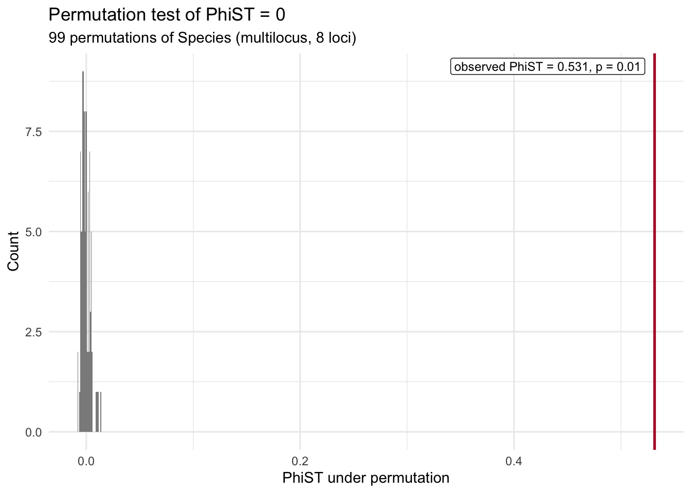

library( gstudio )
library( dplyr )
data( arapat )6 Population Structure
This chapter covers the estimation of genetic structure statistics — measures of how genetic variation is partitioned among populations.
6.1 The genetic_structure() Wrapper
The genetic_structure() function dispatches to specific structure estimators based on the mode parameter:
| Mode | Statistic | Description |
|---|---|---|
"Gst" |
Nei’s Gst | Proportion of total diversity among populations |
"Gst_prime" |
Hedrick’s G’st | Gst corrected for marker diversity |
"Dest" |
Jost’s D | True differentiation measure |
"Fst" |
Wright’s Fst | Fixation index |
"PhiST" |
Excoffier’s Phi_ST | AMOVA of squared distances among individuals |
"PhiFT" |
TwoGener Phi_FT | Differentiation of pollen pools among mothers |
6.2 Basic Usage
Estimate Gst across species:
arapat |>
genetic_structure( stratum = "Species", mode = "Gst" ) Locus Gst Hs Ht
1 LTRS 0.3536942 0.3229669 0.4997122
2 WNT 0.6028903 0.2595040 0.6534819
3 EN 0.1823664 0.3678145 0.4498525
4 EF 0.3653913 0.2772276 0.4368481
5 ZMP 0.4961044 0.1712607 0.3398734
6 AML 0.2723689 0.6045761 0.8308826
7 ATPS 0.5856500 0.2983785 0.7201122
8 MP20 0.2358115 0.6267430 0.8201419
9 Multilocus 0.3835972 0.3660589 0.5938631The output provides per-locus estimates plus a multilocus estimate (last row). Every mode returns the same columns, Locus, the estimate (named Gst, Gst_prime, Dest or Fst), Hs and Ht (plus p.value when you ask for permutations, below), and the Multilocus row reports mean Hs and Ht across loci. For Gst and Fst the multilocus estimate is 1 - mean(Hs)/mean(Ht), following Culley et al. (2001); for Gst_prime and Dest it is the harmonic mean of the per-locus values. Monomorphic loci have no estimate (NA) and are left out of the multilocus value.
6.3 Hedrick’s Correction
For highly polymorphic markers, Gst is constrained to small values. Hedrick’s correction accounts for this:
arapat |>
genetic_structure( stratum = "Species", mode = "Gst_prime" ) Locus Gst_prime Hs Ht
1 LTRS 0.6067798 0.3229669 0.4997122
2 WNT 0.9198112 0.2595040 0.6534819
3 EN 0.3415214 0.3678145 0.4498525
4 EF 0.5756163 0.2772276 0.4368481
5 ZMP 0.6498859 0.1712607 0.3398734
6 AML 0.8970188 0.6045761 0.8308826
7 ATPS 0.9592390 0.2983785 0.7201122
8 MP20 0.8297450 0.6267430 0.8201419
9 Multilocus 0.6503121 0.3660589 0.59386316.4 Jost’s D
An alternative differentiation measure that is independent of within-population diversity:
arapat |>
genetic_structure( stratum = "Species", mode = "Dest" ) Locus Dest Hs Ht
1 LTRS 0.3915879 0.3229669 0.4997122
2 WNT 0.7980690 0.2595040 0.6534819
3 EN 0.1946532 0.3678145 0.4498525
4 EF 0.3312672 0.2772276 0.4368481
5 ZMP 0.3051852 0.1712607 0.3398734
6 AML 0.8584706 0.6045761 0.8308826
7 ATPS 0.9016266 0.2983785 0.7201122
8 MP20 0.7772081 0.6267430 0.8201419
9 Multilocus 0.4255295 0.3660589 0.59386316.5 Permutation Testing
Use the nperm parameter to test the null hypothesis that the structure parameter equals zero:
arapat |>
genetic_structure( stratum = "Species", mode = "Gst", nperm = 99 ) Locus Gst Hs Ht p.value
1 LTRS 0.3536942 0.3229669 0.4997122 0.01
2 WNT 0.6028903 0.2595040 0.6534819 0.01
3 EN 0.1823664 0.3678145 0.4498525 0.01
4 EF 0.3653913 0.2772276 0.4368481 0.01
5 ZMP 0.4961044 0.1712607 0.3398734 0.01
6 AML 0.2723689 0.6045761 0.8308826 0.01
7 ATPS 0.5856500 0.2983785 0.7201122 0.01
8 MP20 0.2358115 0.6267430 0.8201419 0.01
9 Multilocus 0.3835972 0.3660589 0.5938631 0.01The resulting p.value column indicates the probability of observing a value as extreme as the estimate under random permutation of individuals among strata.
6.6 Pairwise Structure
Set pairwise = TRUE to compute structure between all pairs of strata:
pw <- arapat |>
genetic_structure( stratum = "Species", mode = "Gst", pairwise = TRUE )
pw Cape Mainland Peninsula
Cape NA 0.2955307 0.3609387
Mainland 0.2955307 NA 0.2024045
Peninsula 0.3609387 0.2024045 NAThis returns a symmetric matrix of pairwise multilocus estimates.
6.7 Restricting to Specific Loci
Use the locus parameter to restrict the analysis:
arapat |>
genetic_structure( stratum = "Species", mode = "Gst", locus = "LTRS" ) Locus Gst Hs Ht
1 LTRS 0.3536942 0.3229669 0.4997122arapat |>
genetic_structure( stratum = "Species",
mode = "Gst",
locus = c( "LTRS", "WNT" ) ) Locus Gst Hs Ht
1 LTRS 0.3536942 0.3229669 0.4997122
2 WNT 0.6028903 0.2595040 0.6534819
3 Multilocus 0.4949065 0.2912354 0.57659716.8 Analysis of Molecular Variance
mode = "PhiST" partitions the squared AMOVA distances among individuals (those of genetic_distance(mode = "AMOVA")) into variance among and within strata (Excoffier et al. 1992). PhiST is sigma2_among / (sigma2_among + sigma2_within). The result is still a per-locus table, but it prints as an AMOVA table for the multilocus estimate:
fit <- arapat |>
genetic_structure( stratum = "Species", mode = "PhiST", nperm = 99 )
fit
Analysis of Molecular Variance (PhiST)
Stratum: Species; 330-363 individuals in 3 strata; 8 loci
Df SS MS Sigma2 % Var
Among strata 2 929.2 464.592 5.669 53.1
Within strata 1749.1 4.999 4.999 46.9
Total 2678.3 10.668 100.0
PhiST = 0.5314; p = 0.01 (99 permutations)The multilocus sums of squares and variance components are sums over loci. When loci were genotyped in different numbers of individuals their degrees of freedom differ, so the multilocus Df is left blank. Significance comes from permuting strata across individuals, not from an F distribution. anova() returns the table itself, as.data.frame() the per-locus estimates, and plot() the permutation null distribution:
anova( fit )Analysis of Molecular Variance (PhiST)
Df SS MS Sigma2 % Var PhiST Pr(>=PhiST)
Among strata 2 929.18 464.59 5.6691 53.143 0.53143 0.01 **
Within strata 1749.11 5.00 4.9986 46.857
Total 2678.29 10.6678 100.000
---
Signif. codes: 0 '***' 0.001 '**' 0.01 '*' 0.05 '.' 0.1 ' ' 1as.data.frame( fit ) Locus PhiST sigma2_among sigma2_within p.value
1 LTRS 0.5349341 0.5710106 0.4964303 0.01
2 WNT 0.6640308 1.0737782 0.5432826 0.01
3 EN 0.7277250 0.8261439 0.3090980 0.01
4 EF 0.2719683 0.2326600 0.6228072 0.01
5 ZMP 0.2371804 0.1444926 0.4647171 0.01
6 AML 0.4196861 0.7159553 0.9899753 0.01
7 ATPS 0.6385898 1.3139981 0.7436578 0.01
8 MP20 0.4884087 0.7911063 0.8286566 0.01
9 Multilocus 0.5314274 5.6691450 4.9986250 0.01plot( fit )
As usual for AMOVA, sigma2_among and so PhiST can be negative when there is no structure; read that as an estimate of zero.
6.8.1 TwoGener PhiFT
mode = "PhiFT" is the TwoGener analysis of pollen pools (Smouse et al. 2001). Pass mothers and their offspring together. Mothers have OffID == "0", and the maternal family column is stratum (default "ID" for this mode). Each mother’s contribution is removed from her offspring with minus_mom(), and the paternal gametes are partitioned among families:
data( cornus_florida )
cornus_florida |>
genetic_structure( mode = "PhiFT", nperm = 99 )
TwoGener Analysis of Molecular Variance (PhiFT)
Stratum: ID; 40 gametes in 2 families; 5 loci
Df SS MS Sigma2 % Var
Among families 1 2.043 2.043 0.01733 1.0
Within families 38 64.466 1.696 1.69648 99.0
Total 39 66.509 1.71381 100.0
PhiFT = 0.01011; Nep = 49.44; p = 0.27 (99 permutations)Nep = 1 / (2 PhiFT) is the effective number of pollen donors. A mother not genotyped at a locus is reconstructed from her offspring when one genotype is at least 20 times as likely as the next best. Those reconstructions are listed in attr(result, "maternal_inference").
6.9 Multilocus Assignment
The multilocus_assignment() function estimates the probability that an individual originates from each population based on multilocus genotype frequencies:
# Compute stratum-level frequencies
freqs <- arapat |>
frequencies( stratum = "Species" )
# Assign the first individual
arapat |>
slice( 1 ) |>
multilocus_assignment( freqs )Warning in multilocus_assignment(slice(arapat, 1), freqs): This individual has
missing genotypes, cannot compre assignment probability to individuals who do
not have missing data. Stratum Probability Posterior
3 Peninsula 3.205128e-07 1The Posterior column gives the relative probability of assignment to each stratum given the individual’s multilocus genotype.
6.10 Without Pipes
genetic_structure( arapat, stratum = "Species", mode = "Gst" )
genetic_structure( arapat, stratum = "Species", mode = "Gst", nperm = 99 )
pw <- genetic_structure( arapat,
stratum = "Species",
mode = "Gst",
pairwise = TRUE )
genetic_structure( arapat,
stratum = "Species",
mode = "Gst",
locus = c( "LTRS", "WNT" ) )
freqs <- frequencies( arapat, stratum = "Species" )
multilocus_assignment( arapat[1, ], freqs )